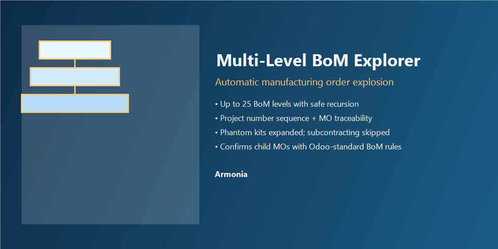
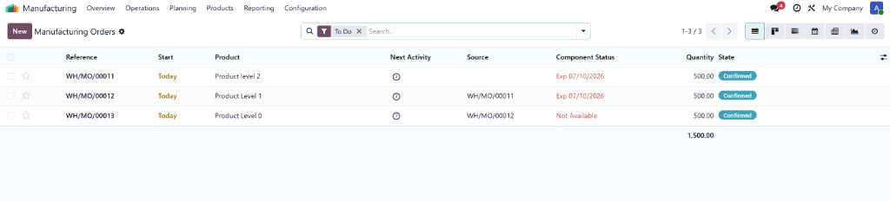

Multi-Level BoM Explorer
Turn complex bills of materials into a clear tree of manufacturing orders—automatically, with project traceability.
Odoo 18
Manufacturing
Sales
Armonia

What “multi-level” means (with your products)
A multi-level structure is simply a finished product that contains sub-assemblies, each with its own BoM.
The module name reflects that reality: you work with several BoM levels, not a flat single-level kit.

1 — Top-level product. You start from the finished item (for example “Product level 2”). Components underneath are other manufactured products (“level 1”, “level 0”) that carry their own BoMs.

2 — Same story in the BoM Overview. Odoo shows the hierarchy as a tree: finished good → sub-assemblies → raw materials. That visual is the “multi-level” idea the name points to.

3 — Orders follow the hierarchy. After confirmation, you see linked manufacturing orders (Source / origin) that mirror the BoM depth—so shop-floor execution matches the multi-level structure.
Why teams buy this
Deep product structures should not mean manual MO creation for every sub-assembly. This module confirms the top manufacturing order and
recursively generates and confirms child MOs according to your BoMs—so production planning stays aligned with Odoo’s own BoM resolution rules.
What you get
- Automatic multilevel explosion on MO confirm — walks BoM lines and creates the next level of manufacturing orders where a manufacturing BoM exists.
- Phantom (kit) BoM support — expands kits without creating an MO for the phantom; continues down the exploded components.
- Subcontracting-aware — subcontracting BoMs are skipped by design to avoid conflicting flows.
- Depth guard — recursion is capped (25 levels) with logging if the limit is reached.
- Project number — sequence-based project number on MOs, inherited by children linked via
origin for end-to-end traceability.
- Operational carry-down — when present on the parent MO, router/job/sales-order related fields are propagated to generated child MOs for consistent job tracking.
- Manual trigger — server action / technical entry point
action_propagate_router for controlled propagation when needed.
Requirements and fit
- Odoo 18.0 with Manufacturing and Sales installed.
- Use the addon folder bom_multinivel_18 on 18.0 servers; use bom_multinivel for Odoo 19.
- Designed for companies with multilevel manufacturing BoMs who want child MOs created automatically at confirmation time.
If another customization also creates child MOs on confirm, review overlap—you may need a single orchestration strategy.
Support